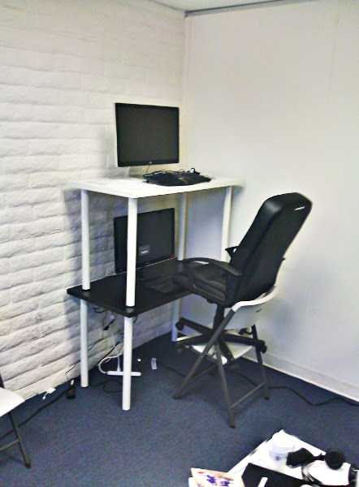
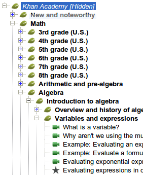
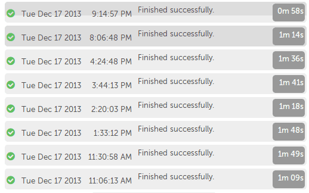

Over the past two years, I've been working largely behind the scenes at Khan Academy on the infrastructure the content team uses to upload and publish content (videos, exercises, articles, and interactive programs) to the site. Most of the changes I've made over the past year are not directly visible to users of the site but without them we could not produce the quality and quantity of lessons we need to provide a "world-class education for anyone, anywhere". One of our strengths as a company is knowing when to hack something together and when to invest in flexible and extensible systems, and I would like to share the solution that we've come up with in case others find it useful.
Context
 Creative solutions for cramped spaces
When I first arrived at Khan Academy's humble office (devs huddled around one long table, with the implementations team occupying the single conference room) the content situation was this: playlists of videos were downloaded directly from Sal Khan's YouTube account1, and there was a single editor for the exercises on the knowledge map, changes to which would show up on the live site immediately upon saving. These entities: Video, VideoPlaylist, and Exercise, were the basis for everything on the site. There was no versioning, no organization, and no direct editing - if Sal wanted to fix a typo in a video title he had to do it in YouTube, and only he had access.
Fast forward a year. We have content from a half dozen content creators teaching math, science, and art history. We've added the concept of a topic tree to organize the content that any developer can edit, and a conceptually simple versioning system: edits are made to an "editing" copy of the tree, and when the version is published, a full copy of it is made that becomes the new editing version. All runtime code instantly switches to using the newly "live" version via a global setting. The system works fairly well, and we are able to build new functionality on top of it: topic pages, power mode for exercises in a topic, and tutorial navigation.

However, last fall it was already becoming clear that the system just wouldn't scale. As we brought on more content creators, coordination become more and more of an issue: hitting publish at the wrong time could push out someone else's in-progress changes, and there was no way to see who was currently making edits or who had edited something in the past. As a stopgap measure, a HipChat room was set up to coordinate publishes. As the number of topics in the topic tree grew, publish times ballooned to an unreasonable 45 minutes (owing partly to the need to duplicate all the topic entities and update their child keys), during which time no editing could happen. Rolling content back was a difficult, manual process. Furthermore, many errors were caught only at publish time, allowing one author's simple oversight to block others from getting their changes out.
Solution

Experienced developers tend to prefer incremental improvements over rewriting from scratch 2, but in this case after some discussion we decided to re-architect the system to one that could fulfill not only our current needs, but our aspirations. We want the best and the brightest teachers to share their knowledge on our platform, whether it's Andover teaching calculus or the Getty and MoMa inspiring a generation of art students. Having to coordinate between creators is a bottleneck, and having to wait an hour for content to appear on the site is untenable. At the same time, our growing dev team is adding features at an ever-increasing rate, and they need something stable and flexible to build on.
When looking at various CMS storage and versioning designs, I tried to keep the primary user in mind. Since the infrastructure should always be invisible to content creators, the primary users are in fact the developers who are building features on top of it. When it comes to versioning and deployment, developers are used to code versioning systems, so I opted to start with a design based entirely on Git3, a popular distributed revision control system.
In the context of content management on App Engine, the Git model has distinct advantages:
- Git's storage model is basically a key value store, with the SHA-1 hash of the data as the key. This maps really well to App Engine's datastore API.
- Git stores references to a snapshot of each object on each commit, so we never have to apply a diff or walk the history to see how something looked at a given point in time, but the hash-based reference structure mean we don't have to duplicate objects that haven't changed between commits.
- Using hashes as keys means that changes made on one machine can be easily merged with changes from another, which is critical in a distributed environment. For instance, adding a new object generates a random key that cannot collide with any other new object.
- By design, it is easy to pull and merge changes between copies of the repository. This makes operations such as syncing a development copy of the site with production as easy as copying over any new keys and setting the head commit pointer.
- Also by design, calculating a diff between any two commits is easy - just compare hashes for each object. This means that publish can incrementally update only objects that have changed, speeding up the process considerably.
- This works equally well for rolling back to an earlier version.
- The Git content storage filesystem model is really simple3 to understand and implement.
I didn't copy Git's design wholesale, nor did I actually expose a Git-compatible API (although it would be really cool to someday be able to check out our content as a repository; it would give us access to a whole bunch of useful tools). However I did find that having a fully working design to crib from made implementation much easier and helped me explain the inner workings to other developers.
So far I've been very happy with the way this system has functioned. It is flexible, so we can implement various versioning or permissions schemes on top of it. Different content types use this system in slightly different ways, and that's fine. Building helpful tools such as diff viewers and remote syncing on top of this infrastructure is really easy, and we could get as fancy as we want to support branching & merging, pull requests from third parties, etc. Most importantly, developers other than me can jump in and create their own versioned entities without a lot of help from me, and get their code working in a very short time, eliminating a dependency on me when implementing new features.
This new architecture also enabled me to reach the goal I had set for myself: publishes now complete in about a minute. This has had a profound impact on how it feels to author content for the site.

If you're curious about the details of the implementation, I will go into sordid detail in a companion blog post.